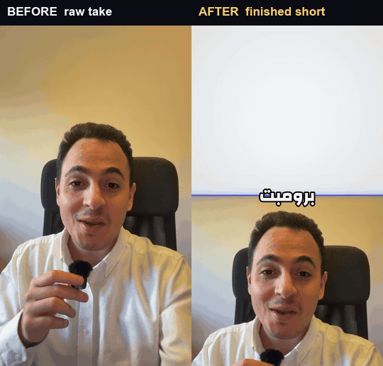
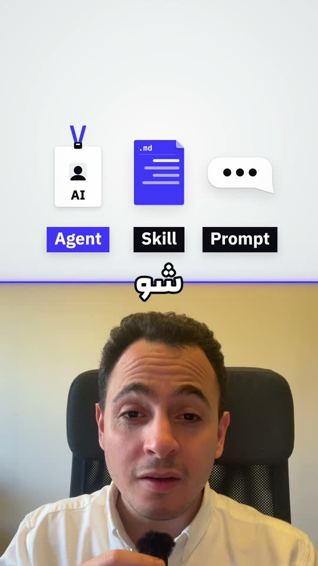
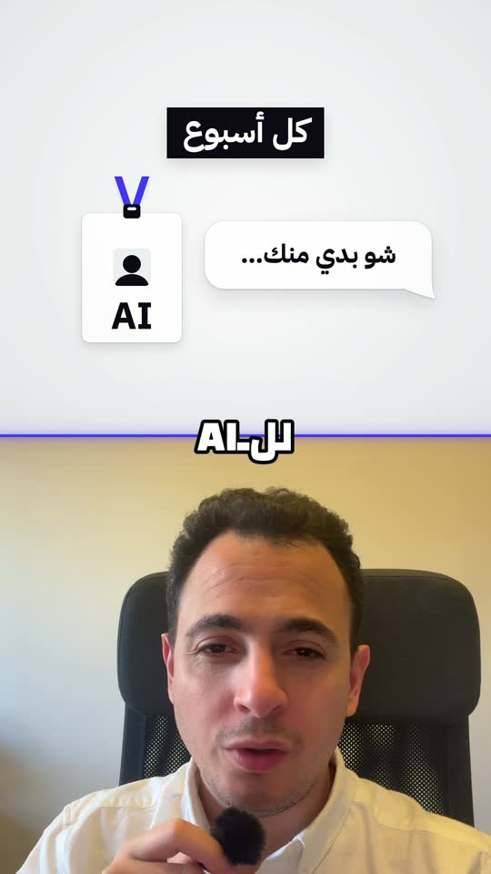
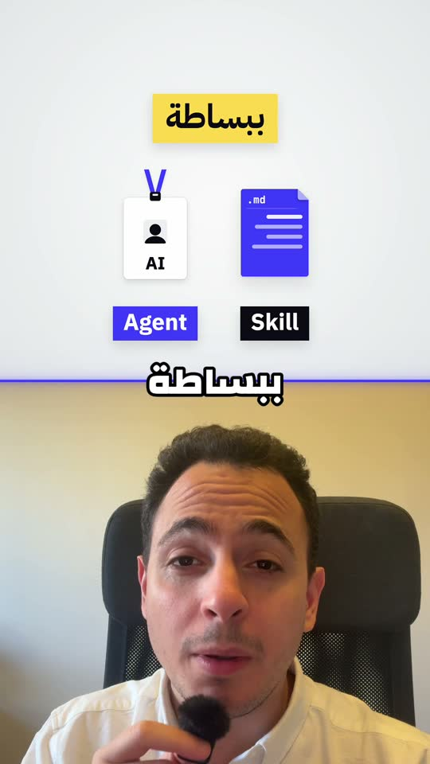
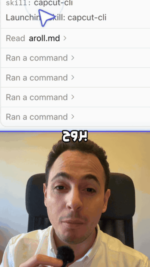

Your AI agent edits real CapCut projects. They stay editable.
Give a coding agent a raw talking-head take and a screen recording. Through capcutctl it cuts, lays out, captions, animates and checks the edit, then hands back a native CapCut project you can still change clip by clip.


Prompt vs skill vs agent
Edited end to end by Claude Code agents with capcutctl and the capcut-skills, then posted on 2026-10-20. It is in Levantine Arabic; the captions are the ones the edit shipped with.
| Footage | BEFOREone 157.7 s face take with retakes, plus screen recordings AFTERa 57.7 s 1080×1920 short |
|---|---|
| A-roll | 40 spoken beats down to the last clean take of each line, cut on acoustic boundaries by capcutctl cut |
| Picture | split screens, full-frame scenes with a circle PiP, proof shots from the real session |
| Text | 113 editable word-by-word caption clips |
| Checks | doctor 0 errors · gate WARN, no FAIL · xray −14.2 LUFS, true peak −1.2 dBTP |
One edit, three openings, all native
The main post and two other openings of the same edit, posted as Instagram trial reels. Plus a look inside the edit.

“Explaining it all again every week?”
The same body after a different opening line.

“Everyone talks about skills and agents”
capcutctl variant makes a duplicate like this from a signed-off edit in one command.

Proof from the real session
The screen recording plays at 1×, punched in so the text reads on a phone.

Three steps
Record
One talking-head take, and the screen recordings that prove what you say.
Ask your agent
With the capcut-skills installed, it asks which style to use, proposes an A-roll cut for you to sign off, writes a shot list and an
edit.jsonplan, runscapcutctl build, and stops on a failinggate.Open it in CapCut
Review, change anything by hand, and export. Clips, masks, keyframes and captions are all still there.
Built so an agent can't break your project
Native and editable
It writes CapCut's own draft files. Clips stay clips, layouts are transforms and masks, captions are text clips. Nothing is flattened into a rendered video.
Transactional
Every write snapshots the project, validates both of CapCut's live documents, syncs the mirror files and rolls back on failure. Every edit command takes --dry-run.
Gates and X-ray QA
gate is a ready-to-post check; xray measures every frame and audio sample of an export.
- FAILblocks
- WARNnamed in the hand-off
- NOTEinformational
Made for agents
A machine-readable contract describes every command. The Claude Code skills are checked against it in CI, and your brand stays in your own profile.
About five minutes
macOS with CapCut Desktop installed and opened once, plus Homebrew.
brew install node python@3.11 ffmpeg
git clone https://github.com/RoXsaita/capcut-editor-cli.git
cd capcut-editor-cli
npm link
python3.11 -m venv .venv
.venv/bin/python -m pip install -e .
capcutctl preflight # names the fix for anything missing
capcutctl projects # lists your CapCut draftsThen install the skills and ask your agent: “Use the capcut-editing skill to edit my face take and screen recording into a short.”
Links
- capcut-editor-cli on GitHub: the CLI, README and docs
- SETUP.md: a new Mac from zero
- Command reference, generated from the contract
- capcut-skills: the agent skills (editing, CLI rules, motion design)
- Issues